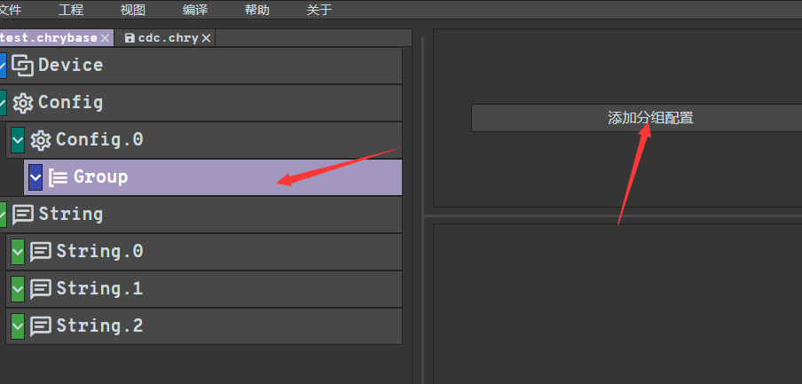

chryusb_configurator¶
chryusb_configurator 主要服务在使用设备协议栈时，生成描述符数组，从而调用 usbd_desc_register 进行注册。
首先我们从 github 下载 chryusb_configurator.exe，然后一路安装就可以了。然后双击打开，点击 工程，并点击 新建工程

新建完成以后，会生成默认的描述符配置，包含 设备描述符、 配置描述符、 字符串描述符,并且 字符串描述符 默认支持三个

然后我们可以根据需要修改相关描述符的信息，比如 设备描述符 中的 vid、pid，class 参数， 配置描述符 中的 Power 等等
然后是 class 的添加，需要点击 文件，并点击 新建文件

然后右侧提供了一些 class 的描述符模板，选择一个进行初始化

如果是多个 class ，则上述两步重复操作就可以了
然后我们根据需要修改相关端点的参数，比如方向、地址、size、interval

最后点击 文件 并保存文件,后缀为 .chry
切换到工程文件，后缀是 .chrybase, 然后点击 添加分组配置 导入刚刚配置好的 class 文件

点击 工程 并点击 保存工程
点击 编译，生成描述符数组

复制编译后的文件到自己的工程中使用即可